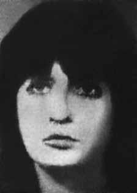

Catarina
Helena
Abi
Eçab
CIRCUNSTÂNCIAS DA MORTE
Catarina Helena Abi-Eçab morreu no dia 8 de novembro de 1968, próximo ao município de Vassouras, no estado do Rio de Janeiro, aos 21 anos de idade.
No ano de 2000, a exumação de seus restos mortais comprovou que Catarina havia sido alvejada na cabeça por um projétil, sendo esta a causa efetiva de seu óbito, e não apenas a colisão do automóvel, onde o seu corpo foi encontrado ao lado do marido. A falsa versão divulgava que a causa da morte teria sido um acidente automobilístico, ocorrido por volta das 19h na altura do quilômetro 69, da rodovia BR 116, na estrada que liga o Rio de Janeiro à Bahia.
De acordo com testemunhas, João Antônio foi retirado do carro ainda com vida e, na sequência, morreu. No veículo, teriam sido supostamente encontrados uma metralhadora, munição, dinheiro, livros e documentos pessoais das vítimas. Consta no boletim de ocorrência que foi dado ciência à Polícia às 20h de 8/11/68: Três policiais se dirigiram ao local constatando que, na altura do km 69 da BR 116, o VW 349884-SP dirigido por seu proprietário João Antônio dos Santos Abi Eçab, tendo como passageira sua esposa Catarina Helena Xavier Pereira (nome de solteira), havia colidido com a traseira do caminhão de marca DE Soto, placa 431152-RJ, dirigido por Geraldo Dias da Silva, que não foi encontrado, mas, segundo relato próprio, era pai de um militar.
O casal de ocupantes do VW faleceu no local. Após os exames de praxe, os cadáveres foram encaminhados ao necrotério local. A versão noticiada pela imprensa afirmava ainda que o acidente teria se dado durante viagem de lua-de-mel do casal. Nas certidões de óbito de ambos a causa da morte estava registrada como “fratura de crânio com afundamento do crânio (acidente)”. As investigações empreendidas assinalaram, contudo, a existência de uma série de indícios que apontavam para a improcedência da versão oficial, segundo a qual a morte do casal teria ocorrido sem a participação de agentes do Estado.
Nesse contexto, no dia 20 de novembro de 1968, o jornal Última Hora divulgou trechos do depoimento de testemunhas do acidente que colocavam em xeque a versão dos órgãos estatais. Em matéria intitulada “Marighella. Polícia procura casal de estudantes”, uma testemunha, que manteve sigilo de sua identidade, revelou que o carro estava sendo perseguido na estrada antes de colidir. Nos dias seguintes, o mesmo jornal publicou “Esta confusa história da metralhadora”. O texto que segue à manchete traz o depoimento do investigador da Delegacia de Vassouras, segundo o qual “seria difícil um acidente ocorrer naquela altura da rodovia, uma vez que se tratava de um percurso reto de quatros quilômetros.”
Outra testemunha ouvida pelo jornal, Júlio Hofgeker, além de reiterar a impossibilidade de acidente naquele trecho da estrada, relatou ter observado várias balas de revólver pelo chão. Júlio, que era constantemente chamado para auxiliar a polícia fotografando acidentes e outras ocorrências, foi impedido, na ocasião, de fazer registro fotográfico das sacolas supostamente encontradas com o casal no local do acidente.
Ademais, segundo relato do proprietário do caminhão vitimado pela colisão, foi o Exército Brasileiro quem reparou o veículo. Posteriormente, em abril de 2001, denúncias feitas pelo jornalista Caco Barcellos levantaram a hipótese de que Catarina e João teriam sido executados com tiros na cabeça. O jornalista entrevistara o ex-soldado Valdemar Martins de Oliveira, que relatou ter visto o casal ser levado para um imóvel em São João do Meriti, onde funcionava um centro clandestino, ocasião em que teriam sido torturados e executados.
Segundo essa versão, o acidente não passaria de uma farsa para esconder a prática de tortura a qual Catarina e João Antônio teriam sido submetidos. Fundamentada nesse relato, a família de Catarina concordou em exumar seus restos mortais. O laudo da exumação, elaborado pela Polícia Técnica de São Paulo, contradisse a versão anterior e concluiu que sua morte foi consequência de “traumatismo crânio-encefálico” causado por “ação vulnerante de projétil de arma de fogo”. Mais recentemente, em depoimento à CNV, datado de 2 de abril de 2013, Valdemar Martins de Oliveira afirmou que teriam participado da ação as equipes de Freddie Perdigão e de outro agente chamado Miro, a quem não atribuiu identificação exata. Perdigão seria o responsável pelos tiros que executaram Catarina e João Antônio.
A CEMDP, ao analisar o caso, no ano de 2005, concluiu que ambas as versões – a que sustentava que o acidente teria sido causado por perseguição ao veículo; e a que afirmava que o acidente teria sido forjado para encobrir a prisão, tortura e execução do casal – eram verossímeis e indicavam que as mortes de João Antônio e de Catarina tinham ocorrido por ação de agentes do Estado brasileiro.
Belisário dos Santos Júnior, relator do caso na CEMDP, em testemunho dado à Comissão da Verdade do Estado de São Paulo Rubens Paiva, datado de 16 de maio de 2013, destacou que, naquela ocasião, a polícia política foi a primeira a chegar ao local do acidente. Afirmou, ainda, que não houve perícia de local nem mesmo laudo necroscópico. Nesse sentido, levantou a possiblidade de que as armas encontradas no carro tenham sido, na verdade, “plantadas” no local para justificar a morte e afastar a suspeita de participação do Estado no óbito. A existência de armas e munição com o casal foi amplamente explorada pelos veículos de comunicação, deixando evidentes as suposições policiais que associaram Catarina e João Antônio ao assassinato do capitão norte-americano Charles Chandler.
Tal fato se coaduna com o exposto por Valdemar Martins de Oliveira, quando de seu depoimento à CNV, sobre o empenho dos serviços de inteligência e das investigações para encontrar os responsáveis entre os movimentos de esquerda por essa morte. No escopo dessas operações, segundo Valdemar, o casal teria sido vigiado sistematicamente em uma casa na Vila Isabel nos dias que antecederam o acidente até serem aprisionados e mortos.
A atenção dos peritos ao conteúdo das supostas bagagens dos Abi Eçab é notável. Tudo foi minuciosamente listado e a metralhadora foi alvo de perícia rigorosa até ser identificada como arma pertencente à Polícia do Distrito Federal. A investigação desses pertences buscava ainda estabelecer vínculos com outros militantes, além de pistas para encontrar Carlos Marighella, ocasião em que se integraram à operação os agentes do DOPS/SP e DOPS/RJ.
Em 2014, a CNV elaborou um Laudo Pericial Indireto sobre o caso. As conclusões apontaram para a veracidade do acidente, ainda que não seja possível precisar com exatidão se houve perseguição ao carro, tampouco o estado de integridade física de Catarina e João Antônio antes do sinistro. Apesar de a colisão de fato ter ocorrido, o laudo pericial afirma, baseado no laudo da exumação anterior (2000), que Catarina ocupava o banco passageiro e veio a óbito por causa de um projétil de arma de fogo. O corpo de João Antônio, que guiava o carro no momento do acidente, não passou por exumação e perícia.
Segundo a análise feita pelo Núcleo de Perícia da CNV, as marcas de frenagem desenhadas no asfalto pelo Volkswagen ocupado pelo casal indicam a ocorrência da colisão e a tentativa de evitá-la, acionando o sistema de freios. Cabe ressaltar que, de acordo com o referido laudo pericial, as condições em que o casal viajava eram ideais. O trecho onde ocorreu o acidente era reto (cerca de quatro quilômetros), asfaltado, possuía mão dupla, pista “delimitada por acostamento seguido de margens composta de vegetação rasteira”, estava seca no momento da batida e “sem quaisquer irregularidades ou deformações”.
Somadas às condições da pista apresentadas no laudo, o fato de os automóveis também estarem em perfeito estado: “os freios funcionavam de forma satisfatória, haja vista que foram constatadas duas marcas pneumáticas de frenagem, de coloração escura, retilínea”. A análise questiona, portanto, a ocorrência de um acidente comum e indica a possibilidade de interpretações que levem em consideração a participação do Estado na tentativa de provocar a colisão automobilística.
Os restos mortais de Catarina Helena Abi Eçab foram enterrados no cemitério do Araçá, em São Paulo.
Catarina Helena Abi-Eçab died on November 8, 1968, near the municipality of Vassouras, in the state of Rio de Janeiro, at the age of 21.
In 2000, the exhumation of her remains proved that Catarina had been shot in the head by a projectile, this being the effective cause of her death, and not just the car collision, where her body was found next to her husband's. The false version disclosed that the cause of death was a car accident, which occurred around 7pm at kilometer 69, on the BR 116 highway, on the road that connects Rio de Janeiro to Bahia.
According to witnesses, João Antônio was removed from the car while still alive and subsequently died. A machine gun, ammunition, money, books and personal documents belonging to the victims were allegedly found in the vehicle. The incident report states that the Police were notified at 8pm on 11/8/68: Three police officers went to the scene and found that, at km 69 of BR 116, the VW 349884-SP driven by its owner João Antônio dos Santos Abi Eçab, with his wife Catarina Helena Xavier Pereira (maiden name) as a passenger, had collided with the rear of the DE Soto truck, license plate 431152-RJ, directed by Geraldo Dias da Silva, who was not found, but, according to his own account, was the father of a military man.
The couple of occupants of the VW died at the scene. After the usual examinations, the bodies were sent to the local morgue. The version reported by the press also stated that the accident had occurred during the couple's honeymoon trip. In the death certificates of both, the cause of death was recorded as “skull fracture with sinking of the skull (accident)”. The investigations undertaken highlighted, however, the existence of a series of signs that pointed to the unfoundedness of the official version, according to which the couple's death would have occurred without the participation of State agents.
In this context, on November 20, 1968, the newspaper Última Hora published excerpts from the testimony of witnesses to the accident that called into question the version of state bodies. In an article titled “Marighella. Police are looking for student couple”, a witness, who kept his identity confidential, revealed that the car was being chased on the road before colliding. In the following days, the same newspaper published “This confusing story of the machine gun”. The text that follows the headline contains the testimony of the investigator from the Vassouras Police Station, according to which “it would be difficult for an accident to occur at that height on the highway, since it was a straight route of four kilometers.”
Another witness interviewed by the newspaper, Júlio Hofgeker, in addition to reiterating the impossibility of an accident on that stretch of road, reported having observed several revolver bullets on the ground. Júlio, who was constantly called to assist the police by photographing accidents and other events, was prevented, at the time, from taking photographs of the bags allegedly found with the couple at the scene of the accident.
Furthermore, according to the owner of the truck victimized by the collision, it was the Brazilian Army who repaired the vehicle. Later, in April 2001, reports made by journalist Caco Barcellos raised the hypothesis that Catarina and João had been executed with shots to the head. The journalist interviewed former soldier Valdemar Martins de Oliveira, who reported having seen the couple being taken to a property in São João do Meriti, where a clandestine center operated, at which time they were allegedly tortured and executed.
According to this version, the accident was nothing more than a hoax to hide the practice of torture to which Catarina and João Antônio were subjected. Based on this report, Catarina's family agreed to exhume her remains. The exhumation report, prepared by the São Paulo Technical Police, contradicted the previous version and concluded that his death was the result of “traumatic brain injury” caused by the “vulnerable action of a firearm projectile”. More recently, in a statement to the CNV, dated April 2, 2013, Valdemar Martins de Oliveira stated that the teams of Freddie Perdigão and another agent called Miro, to whom he did not give exact identification, had participated in the action. Perdigão would be responsible for the shots that killed Catarina and João Antônio.
CEMDP, when analyzing the case in 2005, concluded that both versions – the one that maintained that the accident was caused by pursuit of the vehicle; and the one that stated that the accident had been faked to cover up the arrest, torture and execution of the couple – were credible and indicated that the deaths of João Antônio and Catarina had occurred due to the actions of agents of the Brazilian State.
Belisário dos Santos Júnior, rapporteur of the case at CEMDP, in a testimony given to the Truth Commission of the State of São Paulo Rubens Paiva, dated May 16, 2013, highlighted that, on that occasion, the political police were the first to arrive at the scene of the accident. He also stated that there was no site inspection or even a necroscopic report. In this sense, he raised the possibility that the weapons found in the car were, in fact, “planted” at the scene to justify the death and eliminate the suspicion of State participation in the death. The existence of weapons and ammunition with the couple was widely explored by the media, making evident the police assumptions that associated Catarina and João Antônio with the murder of North American captain Charles Chandler.
This fact is in line with what Valdemar Martins de Oliveira said, when he gave his statement to the CNV, about the commitment of the intelligence services and investigations to find those responsible among the left-wing movements for this death. Within the scope of these operations, according to Valdemar, the couple would have been systematically monitored in a house in Vila Isabel in the days leading up to the accident until they were imprisoned and killed.
The experts' attention to the contents of the Abi Eçab's alleged luggage is remarkable. Everything was meticulously listed and the machine gun underwent rigorous examination until it was identified as a weapon belonging to the Federal District Police. The investigation of these belongings also sought to establish links with other militants, as well as clues to find Carlos Marighella, when agents from DOPS/SP and DOPS/RJ joined the operation.
In 2014, the CNV prepared an Indirect Expert Report on the case. The conclusions pointed to the veracity of the accident, although it is not possible to determine exactly whether there was a pursuit of the car, nor the state of physical integrity of Catarina and João Antônio before the accident. Although the collision did occur, the expert report states, based on the previous exhumation report (2000), that Catarina was in the passenger seat and died as a result of a firearm projectile. The body of João Antônio, who was driving the car at the time of the accident, was not exhumed or examined.
According to the analysis carried out by the CNV Expertise Center, the braking marks drawn on the asphalt by the Volkswagen occupied by the couple indicate the occurrence of the collision and the attempt to avoid it, activating the braking system. It is worth noting that, according to the aforementioned expert report, the conditions in which the couple traveled were ideal. The stretch where the accident occurred was straight (about four kilometers), paved, had two lanes, a lane “delimited by a shoulder followed by banks made up of undergrowth”, was dry at the time of the crash and “without any irregularities or deformations”.
Added to the track conditions presented in the report, the fact that the cars were also in perfect condition: “the brakes worked satisfactorily, given that two pneumatic braking marks were found, dark in color, straight”. The analysis therefore questions the occurrence of a common accident and indicates the possibility of interpretations that take into account the State's participation in the attempt to cause the automobile collision.
The remains of Catarina Helena Abi Eçab were buried in the Araçá cemetery, in São Paulo.
Catarina Helena Abi-Eçab falleció el 8 de noviembre de 1968, cerca del municipio de Vassouras, en el estado de Río de Janeiro, a la edad de 21 años.
En el año 2000, la exhumación de sus restos demostró que Catarina había recibido un disparo en la cabeza con un proyectil, siendo esta la causa efectiva de su muerte, y no sólo la colisión automovilística, donde su cuerpo fue encontrado junto al de su marido. La versión falsa reveló que la causa de la muerte fue un accidente automovilístico, ocurrido alrededor de las 19:00 horas en el kilómetro 69, en la carretera BR 116, en la vía que conecta Río de Janeiro con Bahía.
Según testigos, João Antônio fue sacado del vehículo en vida y posteriormente murió. En el vehículo se habría encontrado una ametralladora, municiones, dinero, libros y documentos personales de las víctimas. El informe del incidente señala que la Policía fue notificada a las 20 horas del día 8/11/68: Tres policías acudieron al lugar y comprobaron que, en el km 69 de la BR 116, el VW 349884-SP conducido por su propietario João Antônio dos Santos Abi Eçab, con su esposa Catarina Helena Xavier Pereira (apellido de soltera) como pasajera, había chocado con la parte trasera del camión DE Soto, matrícula 431152-RJ, dirigida por Geraldo Dias da Silva, quien no fue encontrado, pero, según su propio relato, era padre de un militar.
La pareja de ocupantes del VW falleció en el lugar. Tras los exámenes habituales, los cadáveres fueron enviados a la morgue local. La versión recogida por la prensa también indicó que el accidente había ocurrido durante el viaje de luna de miel de la pareja. En los certificados de defunción de ambos se registró como causa de muerte “fractura de cráneo con hundimiento de cráneo (accidente)”. Las investigaciones realizadas pusieron de relieve, sin embargo, la existencia de una serie de indicios que apuntaban a la infundación de la versión oficial, según la cual la muerte de la pareja se habría producido sin la participación de agentes del Estado.
En ese contexto, el 20 de noviembre de 1968, el diario Última Hora publicó extractos de los testimonios de testigos del accidente que pusieron en duda la versión de los organismos estatales. En un artículo titulado "Marighella. La policía busca a una pareja de estudiantes", un testigo, que mantuvo su identidad en secreto, reveló que el coche fue perseguido en la carretera antes de colisionar. En los días siguientes, el mismo periódico publicó “Esta confusa historia de la ametralladora”. El texto que sigue al titular contiene el testimonio del investigador de la comisaría de Vassouras, según el cual “sería difícil que se produjera un accidente a esa altura en la carretera, ya que era un recorrido recto de cuatro kilómetros”.
Otro testigo entrevistado por el diario, Júlio Hofgeker, además de reiterar la imposibilidad de accidente en ese tramo de la vía, relató haber observado varias balas de revólver en el suelo. A Júlio, que era llamado constantemente para ayudar a la policía fotografiando accidentes y otros acontecimientos, se le impidió, en ese momento, tomar fotografías de las bolsas supuestamente encontradas con la pareja en el lugar del accidente.
Además, según el propietario del camión víctima de la colisión, fue el Ejército brasileño quien reparó el vehículo. Posteriormente, en abril de 2001, informes del periodista Caco Barcellos plantearon la hipótesis de que Catarina y João habían sido ejecutados con disparos en la cabeza. El periodista entrevistó al exsoldado Valdemar Martins de Oliveira, quien relató haber visto a la pareja ser conducida a un predio en São João do Meriti, donde funcionaba un centro clandestino, momento en el que presuntamente fueron torturados y ejecutados.
Según esta versión, el accidente no fue más que un engaño para ocultar la práctica de tortura a la que fueron sometidos Catarina y João Antônio. Con base en este informe, la familia de Catarina acordó exhumar sus restos. El informe de exhumación, elaborado por la Policía Técnica de São Paulo, contradijo la versión anterior y concluyó que su muerte fue consecuencia de un “lesión cerebral traumática” provocada por la “acción vulnerable de un proyectil de arma de fuego”. Más recientemente, en declaración a la CNV, del 2 de abril de 2013, Valdemar Martins de Oliveira afirmó que en la acción participaron los equipos de Freddie Perdigão y otro agente llamado Miro, a quien no dio identificación exacta. Perdigão sería el responsable de los disparos que mataron a Catarina y João Antônio.
El CEMDP, al analizar el caso en 2005, concluyó que ambas versiones –la que sostenía que el accidente fue provocado por la persecución del vehículo; y el que afirmaba que el accidente había sido simulado para encubrir el arresto, tortura y ejecución de la pareja- eran creíbles e indicaban que las muertes de João Antônio y Catarina habían ocurrido por la acción de agentes del Estado brasileño.
Belisário dos Santos Júnior, relator del caso del CEMDP, en testimonio rendido ante la Comisión de la Verdad del Estado de São Paulo Rubens Paiva, de fecha 16 de mayo de 2013, destacó que, en esa ocasión, la policía política fue la primera en llegar al lugar del accidente. También afirmó que no hubo inspección del lugar ni siquiera un informe necroscópico. En ese sentido, planteó la posibilidad de que las armas encontradas en el auto fueran, en realidad, “colocadas” en el lugar para justificar la muerte y eliminar la sospecha de participación del Estado en la muerte. La existencia de armas y municiones con la pareja fue ampliamente explorada por los medios de comunicación, poniendo en evidencia las suposiciones policiales que asociaban a Catarina y João Antônio con el asesinato del capitán norteamericano Charles Chandler.
Este hecho va en línea con lo dicho por Valdemar Martins de Oliveira, al prestar su declaración ante la CNV, sobre el compromiso de los servicios de inteligencia y las investigaciones para encontrar a los responsables dentro del movimiento de izquierda de esta muerte. En el marco de estos operativos, según Valdemar, la pareja habría sido vigilada sistemáticamente en una casa de Vila Isabel en los días previos al accidente hasta que fueron encarcelados y asesinados.
Es notable la atención de los peritos al contenido del supuesto equipaje de Abi Eçab. Todo fue catalogado meticulosamente y la ametralladora fue sometida a rigurosos exámenes hasta identificarla como arma perteneciente a la Policía del Distrito Federal. La investigación de esas pertenencias también buscó establecer vínculos con otros militantes, así como pistas para encontrar a Carlos Marighella, cuando agentes de la DOPS/SP y de la DOPS/RJ se sumaron a la operación.
En 2014, la CNV elaboró un Peritaje Indirecto sobre el caso. Las conclusiones apuntaron a la veracidad del accidente, aunque no es posible determinar con exactitud si hubo persecución del automóvil, ni el estado de integridad física de Catarina y João Antônio antes del accidente. Si bien la colisión sí ocurrió, el informe pericial señala, con base en el informe de exhumación anterior (2000), que Catarina iba en el asiento del pasajero y murió como consecuencia de un proyectil de arma de fuego. El cuerpo de João Antônio, que conducía el coche en el momento del accidente, no fue exhumado ni examinado.
Según el análisis realizado por el Centro Experto de la CNV, las marcas de frenado dibujadas en el asfalto por el Volkswagen ocupado por la pareja indican la ocurrencia de la colisión y el intento de evitarla, activando el sistema de frenos. Cabe señalar que, según el citado peritaje, las condiciones en las que viajaba la pareja eran ideales. El tramo donde se produjo el accidente era recto (unos cuatro kilómetros), asfaltado, tenía dos carriles, un carril "delimitado por un arcén seguido de taludes formados por maleza", se encontraba seco en el momento del choque y "sin irregularidades ni deformaciones".
A las condiciones de la pista presentadas en el informe se suma el hecho de que los coches también se encontraban en perfecto estado: “los frenos funcionaron satisfactoriamente, ya que se encontraron dos marcas de frenado neumático, de color oscuro, rectas”. Por lo tanto, el análisis cuestiona la ocurrencia de un accidente común e indica la posibilidad de interpretaciones que tengan en cuenta la participación del Estado en el intento de provocar la colisión automovilística.
Los restos de Catarina Helena Abi Eçab fueron enterrados en el cementerio de Araçá, en São Paulo.